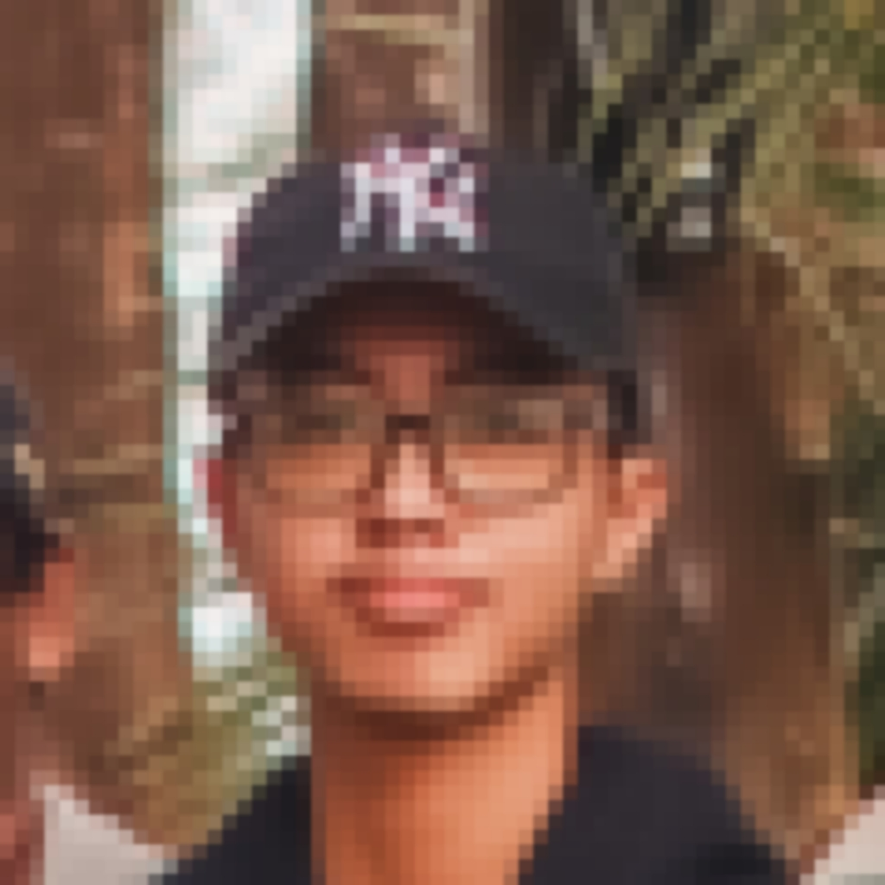

Proyek Rental Kendaraan
Proyek ini bertujuan untuk membuat sistem informasi untuk mengelola rental kendaraan secara efisien.
Sistem Pemesanan Makanan
Proyek ini bertujuan untuk memudahkan proses pemesanan makanan.

Halo! Saya adalah mahasiswa Informatika yang tertarik dengan dunia teknologi dan pemrograman. Saya suka mencoba hal-hal baru, terutama yang berhubungan dengan komputer dan coding. Di waktu luang, saya biasanya bermain game atau ngulik berbagai hal yang menurut saya menarik. Saya juga cukup suka belajar hal baru, walaupun dalam dunia programming terkadang lebih sering bertemu error daripada berhasil di percobaan pertama. Tapi ya, dari error juga kita belajar...atau setidaknya belajar cara copy-paste pesan error ke Google.
Saya tertarik dalam dunia teknologi, game, dan pemrograman membuat saya ingin terus mengembangkan kemampuan saya di bidang ini. Saya tertarik untuk mempelajari berbagai hal-hal baru yang bisa menambah pengalaman dan pengetahuan saya.
Cita-cita saya adalah menjadi orang kaya. Amin.
Proyek ini bertujuan untuk membuat sistem informasi untuk mengelola rental kendaraan secara efisien.
Proyek ini bertujuan untuk memudahkan proses pemesanan makanan.